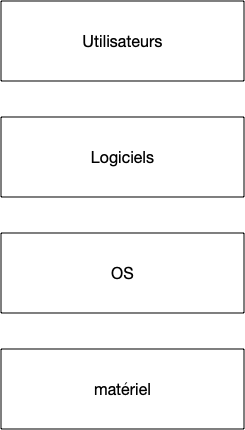
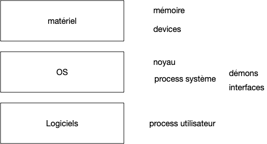

Système d'exploitation
Le but d'un ordinateur est d'exécuter des processus. Pour que chaque processus n'ait pas à tout gérer (accès au processeur, à la mémoire, au disque dur, au réseau, ...) comme on le ferait avec un circuit imprimé par exemple, on utilise un système d'exploitation (ou OS pour operating system).
Son but est de faire le lien entre le matériel (hardware) et le logiciel (software).

Le matériel comporte tous les éléments physique d'une machine :
- processeur
- mémoire
- disques dur
- clavier, souris, écran
- carte réseau
- ...
Que l'on peut regrouper en trois grandes catégories :
- processeur
- mémoire
- les périphériques ou devices qui regroupent tout le reste. C'est ce qui se branche sur la carte mère.
Les logiciels, que d'un point de vue système on appellera process ou processus auront besoin pour fonctionner d'accéder :
- au processeur pour effectuer les différentes opérations de leur code,
- à la mémoire pour stocker leurs variables
- souvent à des devices comme un disque dur (pour lire un fichiers), à la carte réseau (pour aller lire le contenu du site hacker news), en encore au clavier
Le but d'un système d'exploitation est double :
- il doit permettre d'utiliser les devices de l'ordinateur grâce à des drivers
- il permet l'exécution de process :
- de façon concurrente (on peut écrire dans un gdoc tout en écoutant de la musique)
- de façon sécurisée : le gdoc ne peut accéder aux variables de l'application jouant de la musique
Couches Systèmes
Un système d’exploitation n'est pas monolithique, il est constitué de multiple partie qui forment un tout cohérent.
L'organisation logicielle d'un ordinateur (ou plus généralement tout système logiciel assez important) est constitué de couches, comme le stipule le
On peut régler tous les problèmes en ajoutant une couche d'indirection
Un autre exemple célèbre de couches en ingénierie système est le découpage en couches d'un réseau. Ce principe universel est une instanciation de la deuxième partie du discours de la méthode : il faut diviser chaque difficulté en autant de parties facile à résoudre séparément.
D'un point de vue ingénierie, ceci permet en plus de clairement les responsabilités de chaque couche, une maintenance plus aisée.
Un ordinateur et son utilisation peut être séparé quatre couches :
- Matériel
- mémoire RAM
- devices
- Noyau
- drivers matériels
- gestion de la mémoire
- ordonnancement des processus
- process
- interface graphique
- terminal
- ...
- utilisateurs
- qui à le droit de faire quoi
Les utilisateurs lancent les process. Ceux-ci s'exécutent de façon parallèle grâce au noyau et utilisent les ressources matériels via des appels systèmes.
Mémoire
Système d'exploitation
Seul le noyau a accès au matériel et a un contrôle total de la machine. Il doit donc être le plus petit possible car le moindre bug fait planter la machine. C'est pourquoi on distingue deux états d'une machine :
- le kernel mode : le noyau travail
- le user mode : un process travaille
Un système d'exploitation ne peut donc être uniquement composé d'un noyau, ce serait inefficace (rien ne pourrait être exécuté en parallèle) et dangereux (le moindre bug logiciel ou matériel ferait tout planter). On sépare habituellement un système d'exploitation en 3 parties :
- le noyau (kernel) dont le but est de gérer :
- les appels systèmes
- l'ordonnancement des process
- communications entre les 3 entités d'un ordinateur (process, matériel, noyau)
- des interfaces logicielles qui permettent d'accéder aux devices (comme accéder à une clé usb)
- des démons qui gèrent l'environnement (le fait de réagir à l'insertion d'une clé usb dans l'ordinateur par exemple)
Les démons et les interfaces sont des process comme les autres. Ils sont cependant exécutés par un utilisateur spécial, souvent nommé root, qui est le [super-utilisateur] qui est le représentant utilisateur du système.

Utilisateurs
On peut séparer les utilisateurs d'un système en trois grandes catégorie.
root
L'utilisateur root est l'utilisateur lié au système d'exploitation. Il est le propriétaire des process (démons) et interfaces du système d'exploitation. Cet utilisateur a ainsi tous les droits (peut aller partout, réserver autant de mémoire qu'il veut, etc).
Comme Tout processus a un propriétaire, l'existence de cet utilisateur est garantie.
Administrateurs systèmes
Ces utilisateurs ont des droits particulier, ils peuvent modifier des paramètres systèmes et exécuter ou stopper des démons. Ces utilisateur ne sont pas forcément root, en effet, souvent l'utilisateur principal d'une machine est administrateur.
Cela permet, si nécessaire, d'installer ou de configurer son système sans être connecté en tant que root.
Simple utilisateur
Enfin, il existe la foule des autres utilisateurs (vous sur les ordinateurs de l'école ou la fac par exemple) qui ne peuvent pas administer la machine, ni lancer de démons. Vous avez en revanche le droit d'exécuter la plupart des process et d'installer vos propres programme dans l'espace disque qui vous est réservé.
Process
Un process est l'unité de base d'un programme. Un process est un ensemble d'instruction exécutées par le système d'exploitation. Tout process est la propriété le l'utilisateur du système qui l'a exécuté.
Communication avec le Noyau
Le noyau est partie intégrante de tout process. Il est toujours là et s'exécute de temps en temps pour effectuer ses tâches.
Multi Process
Les systèmes d'exploitation permettent tous d'exécuter plusieurs threads de façon concurrente :
- plusieurs thread d'un même process : ils partagent la même organisation en mémoire
- plusieurs thread de process différents : chaque process à sa propre organisation en mémoire
Ceci peut se passer même si l'ordinateur ne possède qu'un seul core. La quasi totalité des ordinateurs actuellement sont multi-core, ce qui permet même d'exécuter des threads de façon parallèle.
Chaque thread sur une machine peut–ê†re dans 3 états distincts :
- bloqué : en attente d'une instruction d'entrée/sortie par exemple
- actif : en cours d'exécution
- activable : pas en cours d'exécution mais prêt à l'être.
Le principe est simple. Prenons l'exemple de 2 threads (A et B) à exécuter sur un unique core. Lorsque le noyau lance l'exécution du premier thread, il va demander au processeur de se faire réveiller au bout de 10ms par une interruption. Le thread A s'exécute donc pendant 10ms avant qu'une interruption ne rappelle le noyau qui va pouvoir stopper le thread A (qu'il va placer en mode activable) et réactiver le thread B (il passe de activable à activé). Une fois ceci fait, le noyau se rendort pour 10ms (via une interruption) et le cycle continue.
Si l'ordinateur possède plusieurs core, le noyau choisi sur quel lancer le thread mais le principe est le même : il se réveille à intervalles déterminés pour gérer l'activation et la désactivation des threads.
Cette activation/ désactivation s'appelle le context switching et n'est pas immédiate, il faut en effet s'assurer que le thread B n'endommage pas l'exécution du thread A.
Context switching
L'exécution d'un thread dépend :
-
de sa mémoire
-
des registres du processeur (IP, SP, et tous les autres)
-
deux thread d'un même process partagent toute la mémoire sauf la pile,
-
deux process différents ne partagent pas la même mémoire sauf le noyau,
Passer d'un thread à l'autre revient donc à :
- sauver les registres de l'un et restaurer ceux de l'autre
- sauver la mémoire de l'un et restaurer la mémoire de l'autre
S'il est facile de sauver/restaurer des registres, ce n'est pas la même chose de la mémoire. Il est illusoire de vouloir sauver toute la mémoire d'un process pour restaurer la mémoire de l'autre process, cela prendrait bien trop de temps.
L'idée est de faire croire au thread qu'il est tout seul en mémoire alors qu'en vrai il la partage avec d'autres.
Pour cela, on commence par découper toute la mémoire en pages (habituellement de 4KiB) et d'avoir une correspondance entre une mémoire logique, celle que voit le thread et la mémoire physique, en RAM.
Comme habituellement un thread n'utilise pas toute la mémoire (loin de là même), la mémoire de plusieurs threads peut tenir dans la mémoire physique sans se gêner :
mémoire physique thread A thread B segments
a a a noyau
b f b pile
c
d
e
f c c bibliothèque partagée
g
h h g data
i i j code
j
Passer de la mémoire d'un thread à un autre se fait juste en changeant l'adressage, pas physiquement la mémoire.
Lorsque la mémoire RAM physique ne suffit plus pour stocker toutes les données de tous les process, le système d’exploitation possède une partie spécifique du disque dur appelée swap qui permet de transférer de la RAM au disque dur et réciproquement si nécessaire.
Changer de contexte, et donc d'exécution d'un thread est quelque chose qui va très vite.
Ordonnancement
Si changer de contexte d'exécution est quelque chose qui va vite, et donc exécuter plusieurs thread sur un ou plusieurs core quelque chose de facile, si on a plus de thread que de core, savoir quel thread exécuter et quel thread arrêter où peut être difficile.
TBD ici.
problème NP-dur sur 2 core : (somme moitié).
sur un core : selon ce qu'on cherche :
- tous doivent y avoir accès : FIFO (round robin)
- priorité et dernière fois qu'ils ont eu accès (celui actuel dans Linux)
- finir au plus tôt : le nouveau
Ca va vite. Un switch toutes les 100ms/(nombre thread).
scheduling : https://en.wikipedia.org/wiki/Round-robin_scheduling vers https://opensource.com/article/19/2/fair-scheduling-linux https://en.wikipedia.org/wiki/Completely_Fair_Scheduler (exemple avec 4 process là : https://www.geeksforgeeks.org/completely-fair-scheduler-cfs-and-brain-fuck-scheduler-bfs/)
changé là par https://lwn.net/Articles/925371/
https://en.wikipedia.org/wiki/Earliest_eligible_virtual_deadline_first_scheduling
https://en.wikipedia.org/wiki/Earliest_deadline_first_scheduling
Création de process
clone puis enfant
process 1 est root : systemd ce qui lance le reste de l'OS puis le login
Démarrage de l'ordinateur
Les différentes étapes du chargement d'un système d'exploitation
- boot de l'ordinateur
- exécution d'un chargeur d'amorçage (bootloader)
- charge le noyau
- vérification du matériel
- vérification des sous-systèmes : réseau, ...
- passage en user mode puis charge les démons et les interfaces
- login